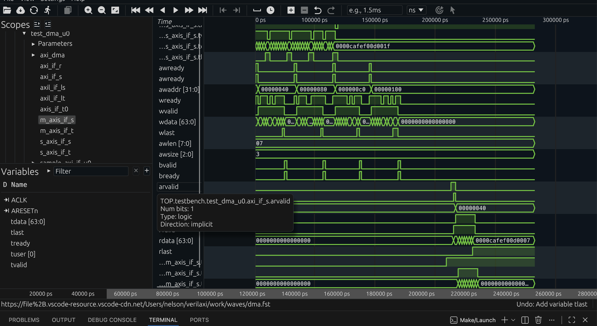

Verilator compiles synthesisable SystemVerilog into cycle-accurate C++ or SystemC. This is well known. What is less commonly explained is how a real project structures the boundary between the C++ simulation harness and a SystemVerilog testbench that contains drivers, monitors, and test logic. Most tutorials show one or the other. This post shows both layers together, using verilaxi as a working example.
The two-layer model
When Verilator elaborates a design it produces a C++ class — typically named Vtop — that represents the entire compiled hierarchy. The simulation loop, clock generation, and waveform dumping all live in a hand-written C++ file (tb_cpp/sim_main.cpp). The DUT RTL and the SystemVerilog testbench (drivers, interfaces, assertions, test logic) are compiled inside that same Vtop object. Neither layer runs independently: C++ owns time; SystemVerilog owns stimulus and checking.
The C++ harness
The entry point is sim_main.cpp. Its responsibilities are narrow: create a VerilatedContext, instantiate Vtop, drive the clock, open an FST file for waveforms, and call eval() on every half-period until $finish is called from SystemVerilog.
#include "Vtop.h"
#include "verilated.h"
#include "verilated_fst_c.h"
int main(int argc, char **argv) {
VerilatedContext* contextp = new VerilatedContext;
contextp->commandArgs(argc, argv); // passes plusargs to SV
Vtop* top = new Vtop{contextp};
VerilatedFstC* tfp = new VerilatedFstC;
Verilated::traceEverOn(true);
top->trace(tfp, 99);
tfp->open("work/waves/sim.fst");
top->clk = 0;
top->rst_n = 0;
while (!contextp->gotFinish()) {
contextp->timeInc(1);
top->clk ^= 1; // toggle clock every time unit
if (contextp->time() == 10)
top->rst_n = 1; // release reset after 10 time units
top->eval();
tfp->dump(contextp->time());
}
tfp->close();
delete top;
delete contextp;
return 0;
}
The C++ harness for verilaxi (tb_cpp/sim_main.cpp)
VerilatedContext holds the global simulation state (time, finish flag, plusargs). Passing argc and argv into commandArgs is what makes plusargs such as +TESTTYPE=1 and +READY_PROB=70 available inside SystemVerilog via $value$plusargs. The FST dump is opened once and fed a timestamp on every eval() call.
The SystemVerilog testbench
The top-level SV module (tb/top/testbench.sv) is the root of the compiled hierarchy. It instantiates the DUT, all virtual interfaces, the VIP classes, and the test. A compile-time `define selects which test module is included, keeping the file list clean.
It helps to think of the project as two cooperating filesets. The tb_cpp/ side is responsible for process-level concerns: starting the simulation, advancing timestamps, toggling clocks, applying top-level reset, and dumping waveforms. The tb/top/testbench.sv side is responsible for hardware-level concerns: wiring interfaces to the DUT, instantiating assertion modules and VIP, and running test logic. Verilator compiles both worlds into a single executable, but each side still has a very different job.
module testbench;
import axi_pkg::*;
import axi_dma_pkg::*;
logic clk;
logic rst_n;
// Interfaces
axil_if #(.ADDR_WIDTH(32), .DATA_WIDTH(32)) axil_if_u0 (.ACLK(clk), .ARESETn(rst_n));
axis_if #(.DATA_WIDTH(64)) s_axis_u0 (.ACLK(clk), .ARESETn(rst_n));
axis_if #(.DATA_WIDTH(64)) m_axis_u0 (.ACLK(clk), .ARESETn(rst_n));
axi_if #(.ADDR_WIDTH(32), .DATA_WIDTH(64)) axi_wr_u0 (.ACLK(clk), .ARESETn(rst_n));
axi_if #(.ADDR_WIDTH(32), .DATA_WIDTH(64)) axi_rd_u0 (.ACLK(clk), .ARESETn(rst_n));
// DUT
snix_axi_dma dut (
.clk (clk),
.rst_n (rst_n),
.s_axil_* (axil_if_u0.*),
.s_axis_* (s_axis_u0.*),
.m_axis_* (m_axis_u0.*),
.s2mm_* (axi_wr_u0.*),
.mm2s_* (axi_rd_u0.*)
);
// Test
`ifdef USE_DMA
test_dma u_test (clk, rst_n);
`endif
endmodule
Simplified top-level testbench (tb/top/testbench.sv)
The clock and reset signals are declared in testbench but driven by C++. Verilator connects the top->clk and top->rst_n members in Vtop directly to these nets. There is no always #5 clk = ~clk anywhere in the SV — the C++ harness is the only clock source.
This split becomes especially useful once the testbench grows beyond a single clock. Modern Verilator timing support means the C++ harness can advance simulation timestamps while SystemVerilog code waits on real temporal events such as @(posedge clk), @(posedge wr_clk), or #delay. That is what makes practical CDC-oriented testbenches possible: asynchronous FIFO tests can model independent write and read clocks, and the SV side still sees correct event ordering because time is owned centrally by the C++ loop.
Plusargs: passing parameters from the Makefile to SystemVerilog
Verilator forwards any +key=value argument on the command line to the simulated design. The Makefile passes parameters such as test scenario, backpressure probability, and FIFO mode directly into the SV testbench without recompilation.
The flow is straightforward: the Makefile expands variables such as TESTTYPE and READY_PROB into simulator command-line arguments, sim_main.cpp forwards argc and argv into contextp->commandArgs(...), and the SystemVerilog side picks them up with $value$plusargs. That keeps scenario selection outside the compiled testbench and makes large parameter sweeps cheap.
// In the Makefile
make run TESTNAME=dma TESTTYPE=2 READY_PROB=70 SRC_BP=1
// In the SystemVerilog test
int testtype;
int ready_prob;
int src_bp;
initial begin
if (!$value$plusargs("TESTTYPE=%d", testtype)) testtype = 0;
if (!$value$plusargs("READY_PROB=%d", ready_prob)) ready_prob = 100;
if (!$value$plusargs("SRC_BP=%d", src_bp)) src_bp = 0;
end
Plusargs consumed in test_dma.sv
This pattern keeps test selection and stress parameters entirely outside the compiled binary. All test variants for a given TESTNAME share a single elaboration; only the plusargs change between runs. The parameter-aware waveform filenames (dma_tt2_rp70.fst) are constructed in the Makefile using the same variable names, so sweep runs never overwrite each other.
The eval loop and time
Every call to top->eval() propagates combinational logic for the current time step. The clock is toggled once per time unit in the C++ loop, so a complete clock cycle requires two eval() calls: one for the rising edge and one for the falling edge. Verilator's --timing flag (used with coroutines in 5.x) allows SystemVerilog @(posedge clk) and #delay constructs inside tasks and classes to suspend and resume correctly across multiple eval() calls.
// Compile flags in config.mk
VERILATOR_FLAGS += --timing
VERILATOR_FLAGS += --assert
VERILATOR_FLAGS += --trace-fst
CFLAGS += -fcoroutines // required for --timing with GCC
Key Verilator flags from mk/config.mk
Without --timing, blocking tasks such as axil_master::write() — which waits for the handshake to complete over several clock cycles — would not suspend correctly. Coroutine support in C++20 (or the compiler's coroutine extension) is what makes multi-cycle SV tasks work inside a Verilator simulation.
The same timing machinery is what lets the testbench represent timestamped behaviour faithfully. Waveform dumps receive monotonically increasing simulation time, delayed SV processes resume at the correct instant, and multi-clock or CDC scenarios no longer need to be approximated as single-cycle polling loops. In practice, that is the difference between a toy harness and one that can run DMA, AXI backpressure, and asynchronous FIFO tests with believable temporal behaviour.
FST waveform dumping
FST (Fast Signal Trace) is preferred over VCD for large simulations because the file is compressed and written incrementally. VerilatedFstC is the Verilator-provided FST writer. The call to top->trace(tfp, 99) registers all signals up to 99 hierarchy levels deep. tfp->dump(time) writes a snapshot at every time step. The FST file can be opened in Surfer or GTKWave while the simulation is still running.
Figure (2) shows an example FST waveform captured from a DMA simulation.
{kind=link}

Figure (2): DMA waveform opened in Surfer. The FST file is written by the C++ harness via VerilatedFstC.
Why a lighter-weight environment?
UVM is a strong methodology and remains the right answer for many large verification programs. The reason verilaxi uses task-based drivers in plain SystemVerilog packages is not that UVM is inherently the wrong tool, but that a lighter-weight environment is faster to bring up when the immediate goal is to plumb interfaces, start running protocol traffic, and iterate quickly on the design and testbench together. The verilaxi VIP (AXI master, AXI-Lite master, AXI-Stream source and sink) is written in this style so useful tests can exist early, before a heavier verification stack is justified.
Summary
The C++ harness and the SystemVerilog testbench are complementary layers. C++ owns the simulation loop, clock generation, reset sequencing, and FST dumping. SystemVerilog owns interface declarations, VIP classes, DUT instantiation, assertions, and test logic. Plusargs bridge the two layers at runtime without recompilation. The --timing flag and coroutine support are what allow multi-cycle SV tasks to work correctly inside the C++ eval loop.
The full source for sim_main.cpp, the testbench top, and all VIP classes is available in the verilaxi repository.
Read next:
Building SystemVerilog AXI VIP for Fast Bring-Up for the task-based drivers that live inside the SystemVerilog layer.
Reproducible RTL Simulation with Docker and GitHub Actions for how the same testbench is run reproducibly in containers and CI.
Synchronous and Asynchronous FIFOs for a design that benefits directly from Verilator timing support and realistic CDC simulation.
Implementation pointers in verilaxi: tb_cpp/sim_main.cpp, tb/top/testbench.sv, and mk/config.mk.
Also available in GitHub.